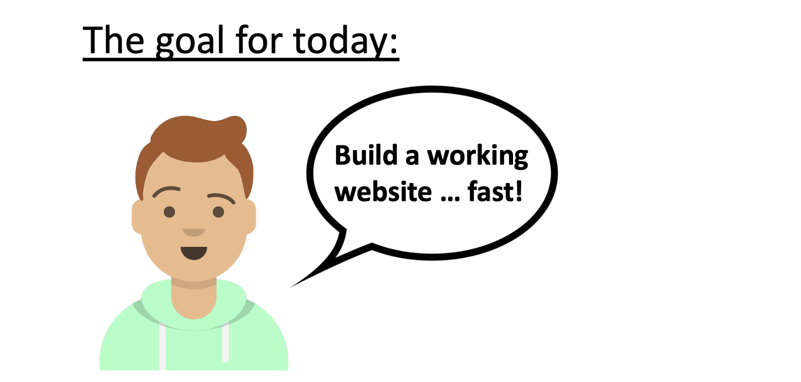
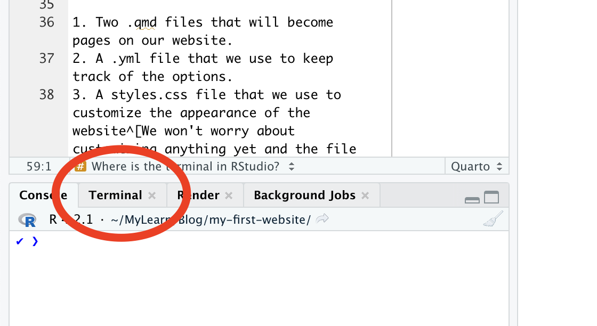

A week has past since rstudio::conf 2022 and my excitment about Quarto, a new multi-output, language agnostic publishing system has only grown with every new amazing resource that people shared on getting started with Quarto. Now that other work has calmed down for me, I finally have time to give some new features a try and write about them.
I am especially excited about the possibility to quickly build websites (for blogs, teaching, sharing notes, publishing research etc.) with Quarto, without having to leave my R environment where I do all my coding anyways. Let’s get started!

Let’s start by building a very simple website. I have three things on my wishlist:
- the website should have multiple pages,
- an intuitive way to navigate between them and
- show some images, code and output.
We won’t worry about hosting yet (that’s for another post) and simply use quarto.pub (more on that below).
- In RStudio, start a new project and choose
Quarto website. - Change content in the .qmd files and configuration in the .yml file.
- Publish to quarto pub via the terminal.
Here is the final website https://philipp.quarto.pub/my-first-website But, let’s look at each of the steps in more detail.
Step 1: Create the Quarto website project
In RStudio, we create a new project and choose Quarto website from the list of available templates. If that does not show up for you, chances are that you need to update RStudio to the latest version (i.e. RStudio 2022.07.1+554 “Spotted Wakerobin” works).
A click on create project will create the scaffolding for our new website:
- Two .qmd files that will become pages on our website.
- A .yml file that we use to keep track of the options.
- A styles.css file that we use to customize the appearance of the website1.
If we click on “Render” (or use Shift + Cmd + K) the document will (hopefully) render and show up in the Viewer pane of RStudio. That’s all and we could already publish this as a functioning website (🥳), but let’s add at least a minimal amount of our own content.
Step 2: Changing the content (.qmd) and the structure (.yml) of our website.
When we initialized the project, Quarto graciously already created two .qmd files which will be two pages on our website and a .yml file which records settings about the structure, general options, appearance and so on.
We are going to change the default content of the index.qmd file and the name and content of the about.qmd file. To do that, simply open the respective .qmd file and edit what you want to change. We won’t focus here on how to author Quarto documents, but the documentation on https://quarto.org/docs/authoring is amazing. For completeness, I put the code that I used in our website at the bottom of this post.
Now, ideally we want to see the effects of our changes immediately. There are two options. We can switch on “Render on Save” and see the updated page in RStudios Viewer pane whenever we save. Or – way cooler IMHO – we can preview the entire website by typing quarto preview in the terminal field of RStudio (next to the console, where???).
Preview a website without publishing it by typing quarto preview in the terminal.
Where the .qmd files tell the browser what the website should display, the .yml file tells the browser how to structure the website. This is where you change the design, add pages, choose a logo and so much more. We’ll not go into detail on the site configuration yaml here and just focus on getting a simple website up-and-running, but luckily the Quarto team has you covered.
Step 3: Publish your website.
This is it! It is time to let our creation leave the confines of the local computer and roam the world wide web. But we need a home address for our website and for the sake of using the simplest possible solution we will publish the website using quarto pub.
If you are already signed up and authenticated for Quarto Pub, great! Keep reading below.
Otherwise click here to show the details.
If you still need to make an account, go to the quarto pub website (https://quartopub.com/), click Sign up, confirm your email and choose a username. The username will be in the URL of every website you create, so best to choose something highly professional 🤓.
Once you created your account (or if you already had one), open https://quartopub.com (this should show an empty profile page if you have not previously created a website) and just keep it open.
Now comes the magic. Head back to RStudio and type quarto publish quarto-pub in the terminal (termi-WHAT?). If you are logged in to quarto pub in a browser, the terminal will show ? Publish with account:, your email address on the next line and in gray the words Use another account…. Don’t be fooled (like I was). This is not an error message and the console is not trying to tell you to use another account, it’s merely asking… So, confidently press Enter and it will ask about the site name. Press enter again and voilà, Quarto will upload your .qmd and .yml files to quarto pub and publish your website.
You (and everyone else!) can now see your website at YOUR-USERNAME.quarto.pub/YOUR-WEBSITE-NAME/. Here is the site that I just created in during this post https://philipp.quarto.pub/my-first-website/.

Appendix
Stupid mistakes that tripped me up and that you don’t need to repeat.
Where is the terminal in RStudio?
If you do not use the terminal often it is easy to overlook it even though it is hidden in plain sight.  ##### Why does quarto pub ask me a different name / email address… When I first published this site, I diligently typed quarto publish quarto-pub in the terminal and was greeted by the message: “Use a different name…”.
I fixed a typo but already published the site, what now?
Don’t despair, unlike certain social media sites, quarto.pub does come with an edit button. Simply change what you want to change in the .qmd or .yml files and don’t forget to publish again via the termina. The console will ask you if you want to update the already published site… yes, please! That last step is easy to miss though, because RStudio’s Render on Save and Preview make it so easy to expect that everything just updates automatically.
The content of the index.qmd file.
Note that I am not actually including the first line, only the part beginning with the yaml dashes (---).
```{r}
---
title: "Welcome to my first website"
---
This is a Quarto website that I created in just a few minutes. Read about it here and find amazing resources on <https://quarto.org/docs/websites>.

```The content of the about.qmd file.
---
title: "Ferries Wheels"
---
## Some fun with ferries wheels
```{r}
#| label: ferries-plot
#| code-line-numbers: true
#| code-fold: true
#| message: false
# install.packages("tidytuesdayR") install.packages("tidyverse")
library(tidyverse)
library(ggplot2)
#data <- tidytuesdayR::tt_load("2022-08-09")$wheels
data <- read_rds("data/wheels")
highest <- data |>
group_by(country) |>
filter(height == max(height, na.rm = T),
country %in% c("Canada", "China", "Mexico", "Taiwan", "Japan", "Philippines", "UK", "USA")) |>
select(country, height, diameter)
ggplot(highest, aes(y = fct_rev(factor(country)), x = diameter)) +
geom_point() +
geom_segment(aes(y = country, yend = country, x = 0, xend = diameter), linetype = "dashed") +
labs(x = "", y = "",
# x = "Diameter of the highest ferries wheel in the country (in meter)"
title = "How far do you travel during one rotation in the highest ferries wheels?",
caption = "Data from ferriewheel package by Emil Hvitfeldt, #tidytuesday August 2022") +
scale_x_continuous(limits = c(0, 800)) +
theme_minimal()
```Footnotes
We won’t worry about customizing anything yet and the file is empty anyways.↩︎